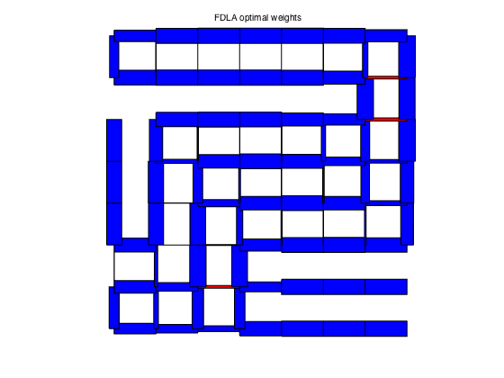
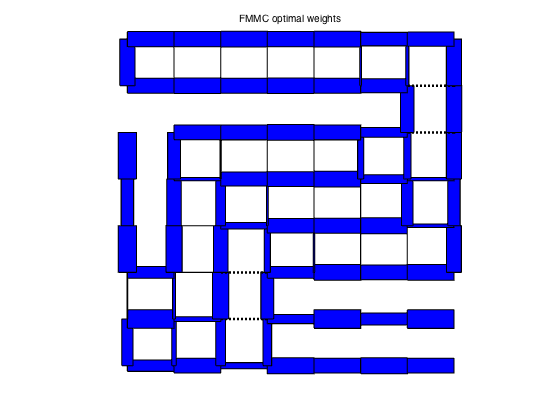
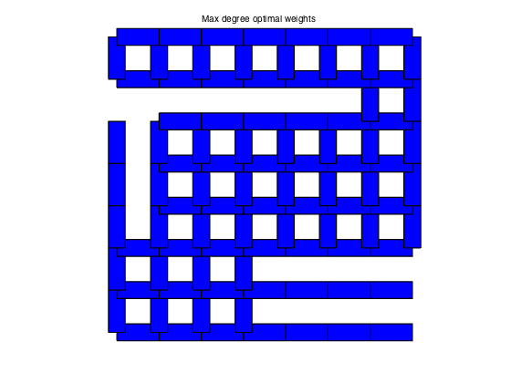
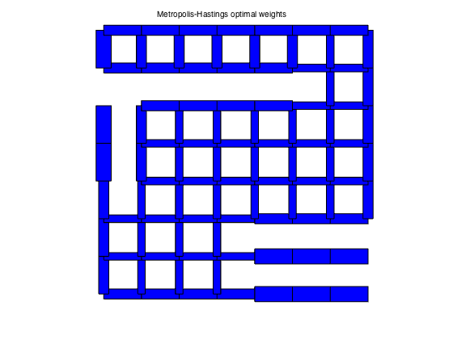

% S. Boyd, et. al., "Convex Optimization of Graph Laplacian Eigenvalues" % ICM'06 talk examples (www.stanford.edu/~boyd/cvx_opt_graph_lapl_eigs.html) % Written for CVX by Almir Mutapcic 08/29/06 % (figures are generated) % % In this example we consider a graph described by the incidence matrix A. % Each edge has a weight W_i, and we optimize various functions of the % edge weights as described in the referenced paper; in particular, % % - the fastest distributed linear averaging (FDLA) problem (fdla.m) % - the fastest mixing Markov chain (FMMC) problem (fmmc.m) % % Then we compare these solutions to the heuristics listed below: % % - maximum-degree heuristic (max_deg.m) % - constant weights that yield fastest averaging (best_const.m) % - Metropolis-Hastings heuristic (mh.m) % generate a cut-grid graph example [A,xy] = cut_grid_data; % Compute edge weights: some optimal, some based on heuristics [n,m] = size(A); [ w_fdla, rho_fdla ] = fdla(A); [ w_fmmc, rho_fmmc ] = fmmc(A); [ w_md, rho_md ] = max_deg(A); [ w_bc, rho_bc ] = best_const(A); [ w_mh, rho_mh ] = mh(A); tau_fdla = 1/log(1/rho_fdla); tau_fmmc = 1/log(1/rho_fmmc); tau_md = 1/log(1/rho_md); tau_bc = 1/log(1/rho_bc); tau_mh = 1/log(1/rho_mh); fprintf(1,'\nResults:\n'); fprintf(1,'FDLA weights:\t\t rho = %5.4f \t tau = %5.4f\n',rho_fdla,tau_fdla); fprintf(1,'FMMC weights:\t\t rho = %5.4f \t tau = %5.4f\n',rho_fmmc,tau_fmmc); fprintf(1,'M-H weights:\t\t rho = %5.4f \t tau = %5.4f\n',rho_mh,tau_mh); fprintf(1,'MAX_DEG weights:\t rho = %5.4f \t tau = %5.4f\n',rho_md,tau_md); fprintf(1,'BEST_CONST weights:\t rho = %5.4f \t tau = %5.4f\n',rho_bc,tau_bc); % plot results figure(1), clf plotgraph(A,xy,w_fdla); text(0.425,1.05,'FDLA optimal weights') figure(2), clf plotgraph(A,xy,w_fmmc); text(0.425,1.05,'FMMC optimal weights') figure(3), clf plotgraph(A,xy,w_md); text(0.375,1.05,'Max degree optimal weights') figure(4), clf plotgraph(A,xy,w_bc); text(0.375,1.05,'Best constant optimal weights') figure(5), clf plotgraph(A,xy,w_mh); text(0.3,1.05,'Metropolis-Hastings optimal weights')
Calling SDPT3 4.0: 4184 variables, 120 equality constraints For improved efficiency, SDPT3 is solving the dual problem. ------------------------------------------------------------ num. of constraints = 120 dim. of sdp var = 128, num. of sdp blk = 2 dim. of free var = 24 *** convert ublk to lblk ******************************************************************* SDPT3: Infeasible path-following algorithms ******************************************************************* version predcorr gam expon scale_data HKM 1 0.000 1 0 it pstep dstep pinfeas dinfeas gap prim-obj dual-obj cputime ------------------------------------------------------------------- 0|0.000|0.000|2.0e+03|3.4e+01|1.7e+05| 1.089011e-08 0.000000e+00| 0:0:00| chol 1 1 1|0.895|0.972|2.2e+02|1.0e+00|5.8e+03|-1.756578e+01 -1.110230e+01| 0:0:00| chol 1 1 2|0.978|0.983|4.7e+00|2.6e-02|1.2e+02|-2.214736e-01 -1.144711e+01| 0:0:00| chol 1 1 3|1.000|1.000|1.2e-04|1.0e-03|9.3e+00|-4.791766e-02 -9.366149e+00| 0:0:00| chol 2 1 4|1.000|0.890|4.6e-04|2.2e-04|1.0e+00|-1.061429e-01 -1.155671e+00| 0:0:00| chol 1 1 5|0.793|0.033|9.4e-05|2.8e-04|4.3e-01|-7.675579e-01 -1.161431e+00| 0:0:00| chol 1 1 6|1.000|0.735|8.0e-06|9.4e-05|1.4e-01|-8.890822e-01 -1.028414e+00| 0:0:00| chol 1 1 7|0.968|0.487|1.2e-06|5.0e-05|5.8e-02|-9.509494e-01 -1.006792e+00| 0:0:00| chol 1 2 8|0.895|0.581|4.6e-07|2.1e-05|1.8e-02|-9.780891e-01 -9.957371e-01| 0:0:00| chol 2 2 9|0.934|0.361|1.2e-07|1.4e-05|8.6e-03|-9.846282e-01 -9.930642e-01| 0:0:00| chol 2 2 10|1.000|0.407|4.5e-08|1.6e-05|4.5e-03|-9.868529e-01 -9.911189e-01| 0:0:00| chol 1 2 11|1.000|0.904|2.9e-09|7.5e-06|5.5e-04|-9.880224e-01 -9.885365e-01| 0:0:00| chol 1 1 12|0.968|0.959|1.7e-10|9.2e-07|1.2e-04|-9.881921e-01 -9.883072e-01| 0:0:00| chol 1 1 13|1.000|0.977|5.1e-11|1.9e-07|1.3e-05|-9.882804e-01 -9.882927e-01| 0:0:01| chol 1 1 14|1.000|0.980|6.9e-11|2.1e-08|7.6e-07|-9.882912e-01 -9.882919e-01| 0:0:01| chol 2 2 15|1.000|0.986|1.6e-11|1.3e-09|2.7e-08|-9.882919e-01 -9.882919e-01| 0:0:01| stop: max(relative gap, infeasibilities) < 1.49e-08 ------------------------------------------------------------------- number of iterations = 15 primal objective value = -9.88291858e-01 dual objective value = -9.88291885e-01 gap := trace(XZ) = 2.72e-08 relative gap = 9.13e-09 actual relative gap = 8.86e-09 rel. primal infeas (scaled problem) = 1.64e-11 rel. dual " " " = 1.26e-09 rel. primal infeas (unscaled problem) = 0.00e+00 rel. dual " " " = 0.00e+00 norm(X), norm(y), norm(Z) = 9.9e-01, 6.6e+00, 1.3e+01 norm(A), norm(b), norm(C) = 3.5e+01, 2.0e+00, 1.2e+01 Total CPU time (secs) = 0.62 CPU time per iteration = 0.04 termination code = 0 DIMACS: 1.6e-11 0.0e+00 7.6e-09 0.0e+00 8.9e-09 9.1e-09 ------------------------------------------------------------------- ------------------------------------------------------------ Status: Solved Optimal value (cvx_optval): +0.988292 Calling SDPT3 4.0: 4366 variables, 143 equality constraints For improved efficiency, SDPT3 is solving the dual problem. ------------------------------------------------------------ num. of constraints = 143 dim. of sdp var = 128, num. of sdp blk = 2 dim. of linear var = 159 dim. of free var = 47 *** convert ublk to lblk ******************************************************************* SDPT3: Infeasible path-following algorithms ******************************************************************* version predcorr gam expon scale_data HKM 1 0.000 1 0 it pstep dstep pinfeas dinfeas gap prim-obj dual-obj cputime ------------------------------------------------------------------- 0|0.000|0.000|2.1e+03|7.8e+01|1.8e+06| 4.543368e+02 0.000000e+00| 0:0:00| chol 1 1 1|0.792|0.933|4.3e+02|5.4e+00|4.2e+04| 8.746282e+02 -1.017808e+01| 0:0:00| chol 1 1 2|0.894|0.971|4.5e+01|2.2e-01|2.3e+03| 7.232508e+02 -1.051730e+01| 0:0:00| chol 1 1 3|0.943|0.889|2.6e+00|3.2e-02|2.0e+02| 1.138259e+02 -1.091175e+01| 0:0:00| chol 1 1 4|0.996|0.762|9.9e-03|8.3e-03|1.7e+01| 6.171218e+00 -9.192581e+00| 0:0:00| chol 1 1 5|0.958|0.889|4.1e-04|2.9e-03|1.4e+00| 1.602182e-01 -1.159879e+00| 0:0:00| chol 1 1 6|0.532|0.514|1.9e-04|1.5e-03|9.9e-01|-2.051199e-01 -1.170932e+00| 0:0:00| chol 1 1 7|1.000|0.329|3.9e-08|1.1e-03|3.5e-01|-7.741474e-01 -1.114688e+00| 0:0:00| chol 1 1 8|1.000|0.544|2.5e-08|4.8e-04|1.3e-01|-9.079432e-01 -1.037562e+00| 0:0:00| chol 1 1 9|0.937|0.465|8.7e-09|2.6e-04|5.8e-02|-9.549590e-01 -1.011399e+00| 0:0:00| chol 1 1 10|0.839|0.405|3.4e-09|1.5e-04|2.8e-02|-9.745663e-01 -1.001890e+00| 0:0:00| chol 1 1 11|0.897|0.342|1.3e-09|9.4e-05|1.5e-02|-9.826287e-01 -9.976444e-01| 0:0:01| chol 1 1 12|0.946|0.945|4.5e-10|1.6e-05|3.6e-03|-9.861534e-01 -9.896009e-01| 0:0:01| chol 1 1 13|0.937|0.935|7.3e-11|3.6e-06|1.5e-03|-9.876189e-01 -9.891192e-01| 0:0:01| chol 2 2 14|0.907|0.888|1.2e-10|1.5e-06|3.7e-04|-9.885403e-01 -9.888995e-01| 0:0:01| chol 2 2 15|0.938|0.933|6.5e-11|3.7e-07|1.8e-04|-9.886851e-01 -9.888664e-01| 0:0:01| chol 2 2 16|1.000|0.949|7.7e-10|1.9e-07|6.2e-05|-9.887810e-01 -9.888403e-01| 0:0:01| chol 2 2 17|1.000|0.958|3.7e-10|6.2e-08|1.7e-05|-9.888136e-01 -9.888302e-01| 0:0:01| chol 2 2 18|1.000|0.959|1.1e-10|1.7e-08|4.5e-06|-9.888228e-01 -9.888272e-01| 0:0:01| chol 2 2 19|1.000|0.959|9.8e-11|4.6e-09|1.2e-06|-9.888253e-01 -9.888264e-01| 0:0:01| chol 3 4 20|1.000|0.956|7.2e-10|1.3e-09|3.7e-07|-9.888259e-01 -9.888262e-01| 0:0:01| chol 4 6 21|1.000|0.958|8.7e-10|3.9e-10|1.0e-07|-9.888261e-01 -9.888262e-01| 0:0:01| chol 6 7 22|1.000|0.955|4.4e-10|1.3e-10|3.1e-08|-9.888261e-01 -9.888262e-01| 0:0:01| stop: max(relative gap, infeasibilities) < 1.49e-08 ------------------------------------------------------------------- number of iterations = 22 primal objective value = -9.88826133e-01 dual objective value = -9.88826162e-01 gap := trace(XZ) = 3.08e-08 relative gap = 1.03e-08 actual relative gap = 9.80e-09 rel. primal infeas (scaled problem) = 4.36e-10 rel. dual " " " = 1.32e-10 rel. primal infeas (unscaled problem) = 0.00e+00 rel. dual " " " = 0.00e+00 norm(X), norm(y), norm(Z) = 1.0e+00, 3.8e+00, 1.4e+01 norm(A), norm(b), norm(C) = 3.6e+01, 2.0e+00, 1.3e+01 Total CPU time (secs) = 1.01 CPU time per iteration = 0.05 termination code = 0 DIMACS: 4.4e-10 0.0e+00 8.4e-10 0.0e+00 9.8e-09 1.0e-08 ------------------------------------------------------------------- ------------------------------------------------------------ Status: Solved Optimal value (cvx_optval): +0.988826 Results: FDLA weights: rho = 0.9883 tau = 84.9099 FMMC weights: rho = 0.9888 tau = 88.9938 M-H weights: rho = 0.9917 tau = 120.2442 MAX_DEG weights: rho = 0.9927 tau = 136.7523 BEST_CONST weights: rho = 0.9921 tau = 126.3450
   